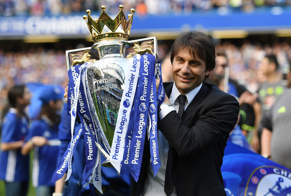
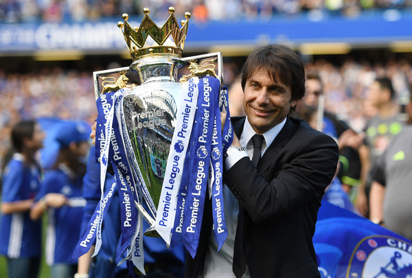
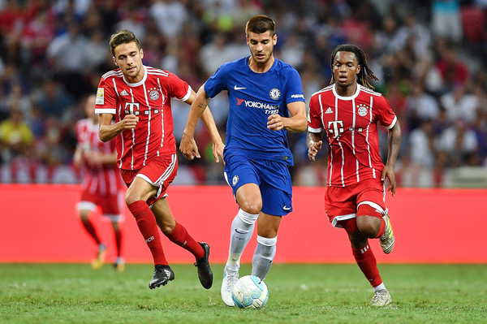

Chelsea Season Review 2017/18
Can the defending champions defend their title?

Can the defending champions defend their title?
Antonio Conte didn’t have the best of introductions to the Premier League with Chelsea, losing to rivals Arsenal and Liverpool in the early season, though that soon turned around as he unleashed his 3-4-3 system, the defining tactical change of 2016/17.
From conceding three goals in one half to Arsenal, his squad went on a Premier League record 13-game winning streak which laid the foundation of their title charge. Though the title wasn’t sealed until their third last game due to Tottenham sitting just behind, Chelsea set a record for the most wins in a Premier League season, with 30 victories.
Due to a poor campaign the year before, Chelsea did not take place in either European competition, which was somewhat of a blessing, allowing them to focus solely on domestic success.
Several Chelsea players had standout years; N’Golo Kante won the PFA Player Of The Year, while Eden Hazard was also one of the competition’s best. Thibaut Courtois won the Golden Glove award for the most clean sheets, while Antonio Conte won the Manager of the Year award. Conte, however, utilised only 13 players regularly, keeping a relatively tight squad.
In their hunt for a new striker, Chelsea eventually secured the services of Alvaro Morata, a player with a previous relationship with Conte, and his on field form will be crucial to Chelsea’s success.
To replicate last year’s success, it’s crucial that Morata can be of similar value to that of Diego Costa. While Morata is not as strong as Costa and his hold up play isn’t as polished, he’s a far better aerial threat and possesses a much cooler head.
Morata has taken to life in London with very little fuss and has scored important goals so far.
Conte’s system is dependent on quality wing-backs, and while he has two sufficient ones in Marcos Alonso on the left and Victor Moses on the right, they aren’t world class
While Moses is lauded for his effort and is a player reborn since returning from his numerous loan spells, he lacks some of the skill of a world-beater. Alonso is a quality attacking presence when he works his way up onto the wing, though struggles to track back and frequently exposes the Blues via his side of the pitch.
While other sides in England have top talent to rival or even surpass Chelsea, and the top European teams are at a higher level, the Blues are one of the most well-drilled squads in Europe under Conte and that should hold them in good stead.
Chelsea like United are playing catch up to City and would have to play out of their skin to defend their title and overtake city with games again top 4 clubs coming up